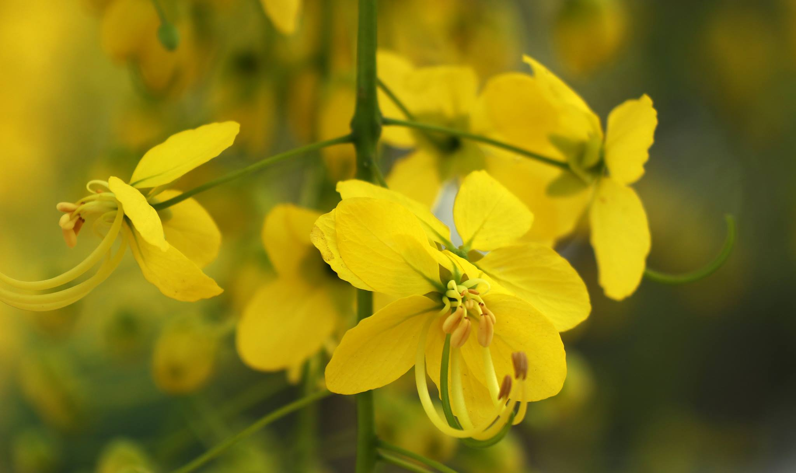
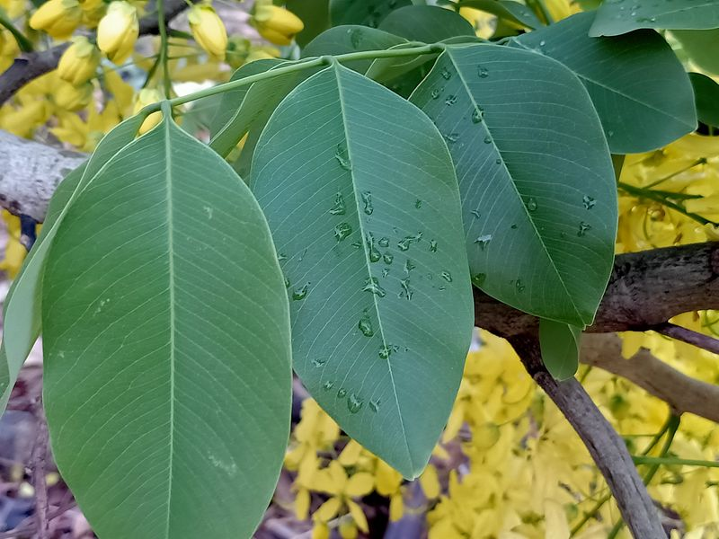

ดอกคูน(Golden Shower Tree หรือ ชื่อวิทยาศาสตร์ Cassia fistula) เป็นพืชในวงศ์ถั่ว (Fabaceae) และเป็นต้นไม้ประจำชาติของประเทศไทย มีความสำคัญทั้งในแง่สัญลักษณ์ วัฒนธรรม และการใช้งานทางการแพทย์ ดังนั้นการศึกษาดอกคูณเป็นสิ่งที่น่าสนใจในหลายแง่มุม
1.ดอก
• สีเหลืองสดใส ออกเป็นช่อห้อยลงมาตามกิ่ง
• ดอกแต่ละดอกมีลักษณะสมมาตร ด้านในมีเกสรตัวผู้และเกสรตัวเมียชัดเจน
• ดอกบานเต็มที่ในช่วงฤดูร้อน (ประมาณเดือนมีนาคม-พฤษภาคม)

2.ใบ
• ใบเป็นใบประกอบแบบขนนก มีใบย่อย 4-8 คู่
• สีเขียวสดและเรียบ

3.ผล
• เป็นฝักยาวทรงกระบอก มีสีดำหรือสีน้ำตาลเมื่อแก่
• มีเมล็ดเรียงตัวในฝัก โดยมีเยื่อเหนียวหุ้มเมล็ด
1. ทางการแพทย์
• ฝัก: มีฤทธิ์เป็นยาระบาย
• ราก: ใช้เป็นส่วนผสมในยาบำรุงโลหิต
• เปลือก: มีสารฝาดสมาน ใช้รักษาแผลและแก้ท้องเสีย
2. ทางวัฒนธรรม
• ดอกคูณเป็นสัญลักษณ์ของความเจริญรุ่งเรือง มักใช้ในพิธีมงคลต่าง ๆ
• เป็นดอกไม้ประจำวันสงกรานต์และสะท้อนถึงความร่มเย็นของคนไทย
3. การตกแต่ง
• นิยมปลูกเป็นไม้ประดับริมถนนและสวน เพราะให้ร่มเงาและดอกสวยงาม
4. การอนุรักษ์
• การขยายพันธุ์ส่วนใหญ่ใช้วิธีเพาะเมล็ดหรือการตอนกิ่ง เพื่อรักษาสายพันธุ์และปลูกเพิ่มในพื้นที่อนุรักษ์
การศึกษาในมุมวิทยาศาสตร์
• การสังเกตวงจรชีวิต: ศึกษาการงอกของเมล็ด พัฒนาการของดอก และการแพร่กระจายเมล็ด
• การวิเคราะห์โครงสร้าง: เช่น โครงสร้างดอก การทำงานของเซลล์สืบพันธุ์ และระบบลำเลียงน้ำ-อาหาร
• การวิจัยสมุนไพร: ศึกษาสารสำคัญในส่วนต่าง ๆ ของต้น เพื่อนำไปใช้ในทางการแพทย์